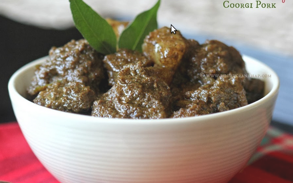

Pandi Curry

Description
The famous Pandi curry from the Coorg region of
Southern India. All you need is good quality pork
with fat, as fat is what help lend this dish its
amazing flavour along with the rich flavour of spices.
Ingredients
- 1 kg pork with fat and skin cut into cubes
- 10 fat cloves of garlic finely chopped
- 1 Inch ginger finely chopped
- 3-4 grenn chillis
- 1 big onion finely sliced
- 1 tsp red chilli powder
- 1/4 tsp turmeric powder
- 1 cup of water
- little oil
- Salt to tast
- 1/2-3/4 tablespoon Kanchampuli
Steps
- Cook the meat with the garlic, green chillis, curry leaves
onions, red chilli powder, turmeric powder, little oil,
water, and salt till it is tender
- Add the spice mix to the cooked meat.
- Do a quick taste check
- Remove from heat and serve hot with Kodava
style rottis or neer dosa or rice